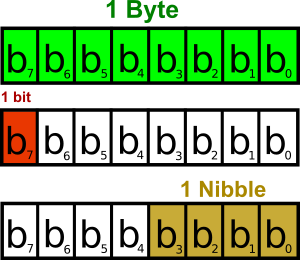
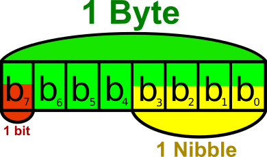
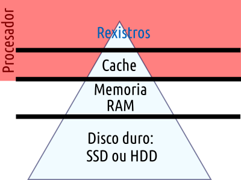

Coñecementos previos
Unidades de Medida
Hardware e Virtualización
Índice
Unidades
Hardware
Sistemas
Información e tamaño
Bit vs Byte e Nibble
 Razoa e contesta:
- Cantos bits ten un byte?
- Cantos bytes ten un bit?
Cómo se escribe KB ou Kb?
- Un KB ou KiloByte (kilobyte) son 1000 B (bytes)
- Un Kb ou Kilobit son 1000 bits (1000 b)
- Un KB son 8*1000 bits (8000 b)
- Un Kb son 1000/8 bytes (125 B)
KB vs KiB
- Antes empregábanse potencias de 1024 (2 10)
- En 1998 norma IEC 60027-2 crea unidades con prefixos binarios
- Grosso modo: Fabricantes empregan uds do SI
- Sistemas Operativos empregan uds "binarias"
Taxa de transferencia
- En redes:
- Exprésase en múltiplos de bits/segundo.
- Non é o mesmo velocidade de subida que de baixada.
- De disco a disco o habitual é falar de MB/segundo.
- OLLO!
- Ao transferir datasets.
- Ao facer volcados de datos.
Problema...
A axencia do tempo de Groenlandia quere enviar un dataset con datos meteorolóxicos históricos de Narsarsuaq a Nuuk (a capital) para procesalos.
- Teñen unha velocidade de 56 Kbps
- Queren transmitir 100 MiB
Canto tardan en ir a pé?
Canto tardan en transmitir os datos?
Subida de arquivo por rede
Por turnos! Ponte de acordo cos compañeiros
- Colle o arquivo de 100 MB do sitio: https://www.thinkbroadband.com/download
- Cronometra co móbil canto tardan en subirse: (Ponte de acordo cos compañeiros)
- Sube o arquivo con WinSCP ao servidor turing
- Sube o arquivo con WinSCP ao servidor hadoop.cesga.es
- Cal tardou máis? Calcula a velocidade media
Exercicio
Transferencia de arquivo por rede Globus
- Transfire o arquivo que che indican dun datacenter a outro
- Tarda máis ou menos? Por qué?
Por qué importan os tamaños e transferencias?
- Pola cuota (quota) que che dan para almacenar os datasets.
- Polo tempo que levan:
- Copias de seguridade
- Transferencia entre servidores
- Entender sistemas como HDFS, Lustre, etc
Xerarquía de memoria
Memoria virtual
Se non temos memoria RAM suficiente, empregamos unha zona de disco.
Ralentiza operacións.
Ollo se non temos memoria suficiente!
Frecuencia de procesador
- Mídese en múltiplos de hercio: Hz (s-1): kilohercio, megahercio, gigahercio.
- 1 Hz = número de ciclos por segundo.
- Cada instrucción executada por un procesador, pode tardar un número de ciclos diferente.
Os ordenadores actuais...
- Os procesadores modernos levan máis dun core (núcleo)
- Cada core pode ter varias unidades funcionales
- A un core lle poden chegar varios fíos de execución
- Intel: Hyperthreading. AMD: Simultaneous MultiThreading (SMT)
Supercomputador
- 10 anos por diante da tecnoloxía (antigamente).
- Ambiente de supercomputación (actualmente):
- Moitos procesadores (exemplo: Finisterrae III: >700 procesadores)
Escalado horizontal vs vertical
Vertical: Carro grande, ande... ("mellorar o servidor").
Horizontal: Máis madeira ("engadir servidores").
Apache Hadoop
Tipo de escalado para o que está pensado?
O tamaño importa?
A partir de qué tamaño falamos de Big Data?Máquinas Virtuais
En BIOS ter activado
- Intel: VT-X
- AMD: SVM, AMD-V...
Software de virtualización
- VirtualBox
- Microsoft Hyper-V
- VMWare
- Xen
- Qemu
- ...
Outros "similares"
- "Dockers" (servizos)
- "OpenStack" (nube)
VirtualBox
Anfitrión vs invitado (virtualbox)
Tipos de rede
Almacenamento. Controladoras: SATA/IDE
Extensión Pack e Guest Additions
OpenStack
CESGA (mostrar)
Jose Sánchez
“Errare humanum est, sed perseverare diabolicum”Se atopas erros, envíame un correo a: